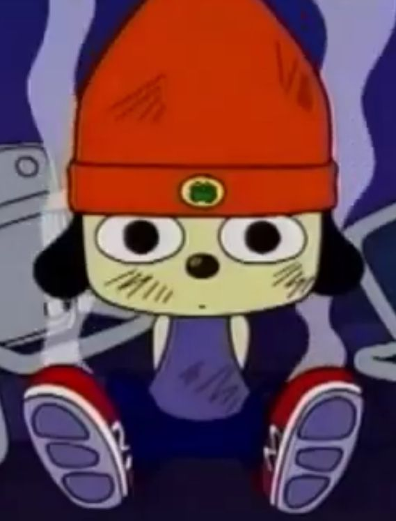

PaRappa Rappa, alias PaRappa the Rapper and more commonly referred to as PaRappa or Parappa, is a paper-thin rapping dog and the titular protagonist of the franchise. His adventures usually lead to difficult situations which he counters with his catchphrase, "I gotta believe!" and pulls through. PaRappa stars as the main character in his quest to reach his idea of adulthood to proof himself towards his crush Sunny Funny. PaRappa can be generally described as outgoing, optimistic, and cheerful. He can easily be demotivated, which puts him in a insecure state of mind, to resolve this, he believes in himself, and he feels better again.
